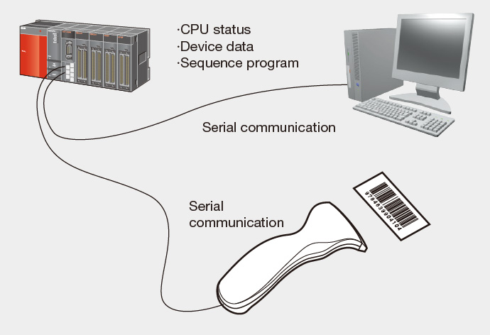
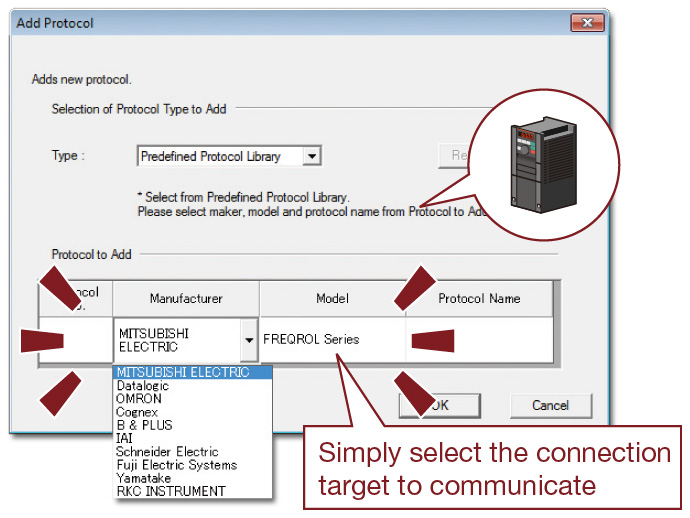
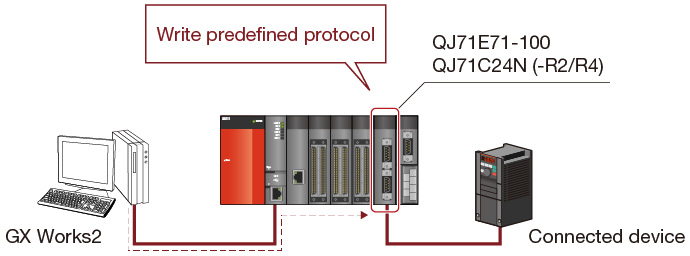
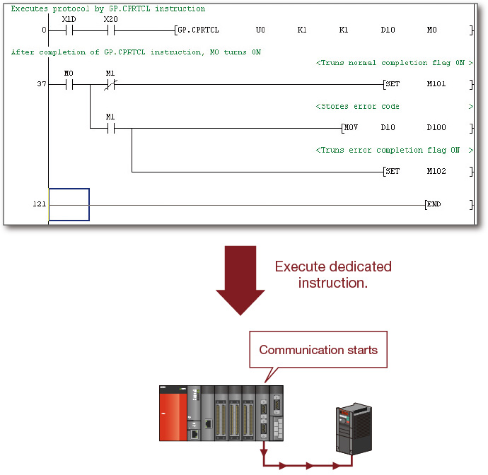
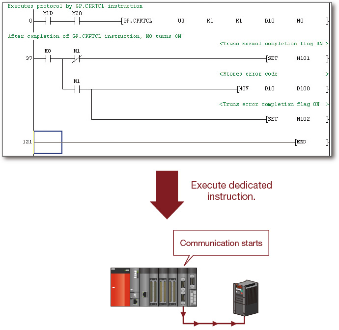
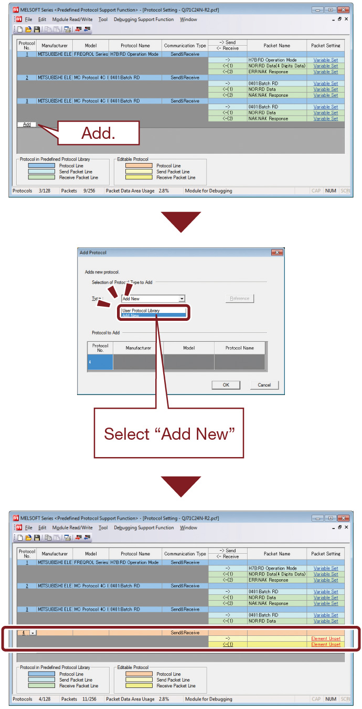
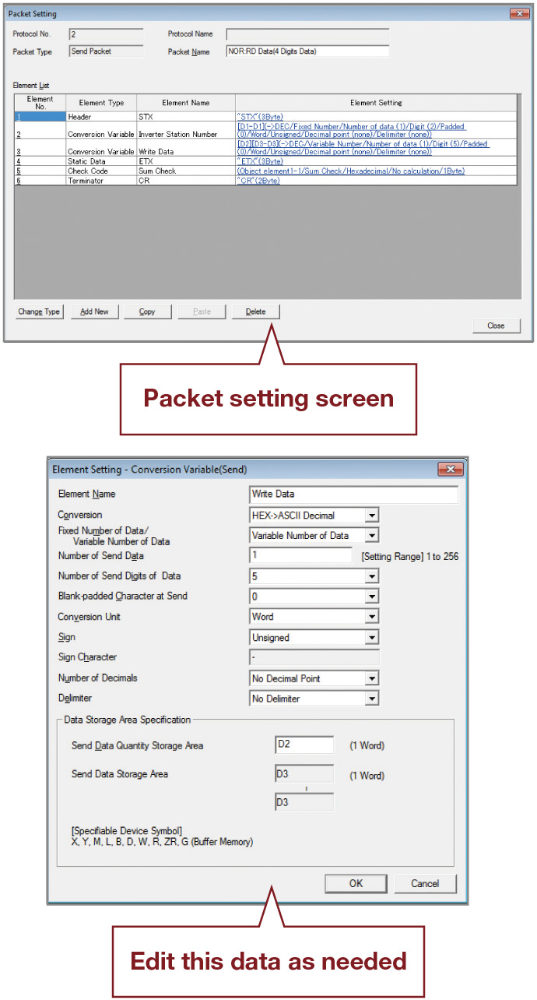

Controllers MELSEC-Q Series
Product features -Network-

Serial communication
These highly flexible communications modules allow connection to practically any serial device
Serial communication module
- RS-232 1ch, RS-422/485 1ch
- RS-232 2ch
- RS422/485 2ch
- Push the limits of serial technology: baud rates up to 230.4 kbps, distance up to 1200 m, and multiple block batch read/write up to 960 words from QCPU device memory.
- External devices (personal computer, HMI, etc.) may read and write data in the programmable controller CPU using MC protocol.
- Connect with intelligent devices using their native protocol (barcode reader, measurement device, etc.) by selecting non-procedure protocol and using a sequence program for communication control.
- MELSOFT engineering software can establish a connection to the programmable controller CPU through the serial connection to perform programing and maintenance duties.
- Dedicated functions are available to facilitate RS-232 communication over public telephone lines using a serial modem. One of them, the remote password function, prevents unauthorized access to programmable controllers via the modem line.

Combination of Ethernet/serial communication module and GX Works2 (predefined protocol support function)
Communication with any device can be started quickly only by selecting the device from the predefined protocol library
❶ Select the manufacturer and model (series) of the device to be connected.
There is no need for complicated predefined protocol setting for the device.
Simply select from communications protocol libraries such as MODBUS® and BACnet®, which are prepared in advance.

❷ Write the predefined protocol to the module.
Write the set predefined protocol to QJ71E71-100, QJ71C24N (-R2/R4) module. Up to 128 protocols can be set in one module.

❸ Execute the protocol with ladder program.
With ladder program, communication with any external device can be made only by executing a dedicated predefined protocol starting instruction.
 
Easy to prepare and edit predefined protocol
- Even if the device to be connected is not contained in the predefined protocol library, the device can be added easily.

- The contents of the prepared predefined protocol can be displayed in list form. The protocol can be edited easily.

- Supported by QJ71C24N (-R2/R4) with the function version B and a serial number whose first 5 digits are 11062 or higher.
- Supported by products with the first five digits of the QJ71E71-100 product number of 15042 or later.